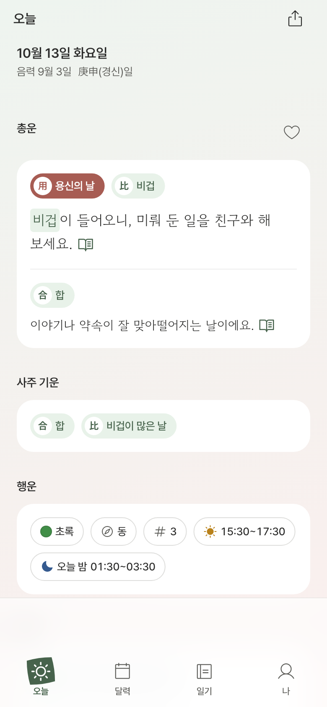
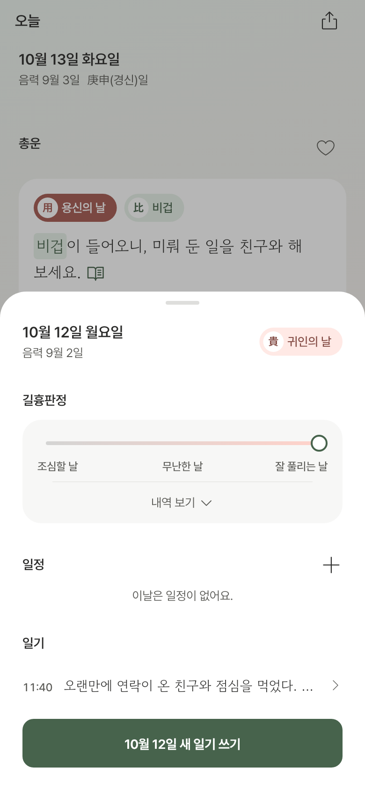
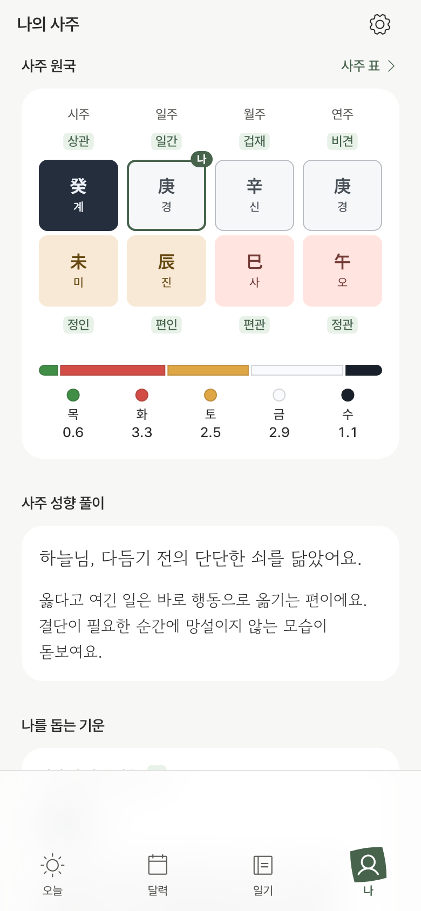
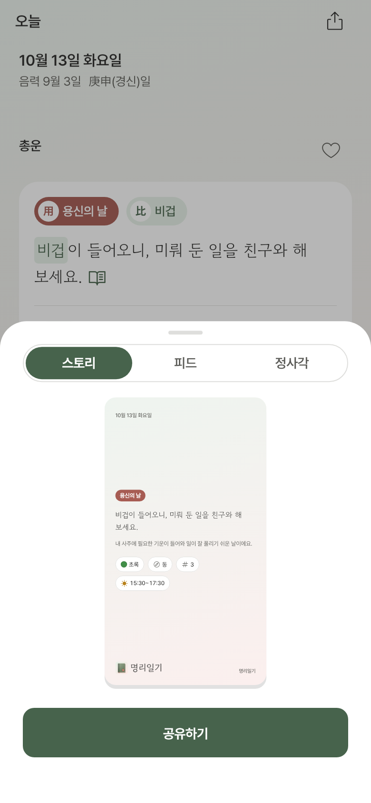

스토어 문구 라운드 R49 (#1201, D133)
판 4: 스크린샷 위 글, 부제, Play 짧은 설명, 홍보 문구, 키워드를 정했습니다. 설명은 나열 대신 쓰는 순간을 따라가는 글로 두 판을 냈습니다. 스크린샷 위 글은 design 명세(V133)의 App Store 틀을 줄인 모습입니다. 한 줄 상한은 ko 14자, 최대 두 줄입니다. 화면은 지금 app 렌더라 근거 시트 꼬리표가 옛 문구("자정까지")이고, 스토어용은 app이 다시 찍습니다. 장면마다 하나를 고르거나 "다 별로"를 고릅니다.
스크린샷 위 글
1. 오늘 today
같은 날도
내 사주로 보면 달라요
내 사주로 보면 달라요

2. 근거 시트 evidence
한 문장 한 문장
근거 있는 해석
근거 있는 해석

3. 달력 calendar
중요한 약속은
길일에 잡아 보세요
길일에 잡아 보세요

4. 그날 시트 daySheet
좋았던 하루를
운세와 함께 기억해요
운세와 함께 기억해요

5. 나의 사주 mySaju
사주에 비추어
나를 다시 알아봐요
나를 다시 알아봐요

6. 공유 share
내 행운을
친구와 나눠요
친구와 나눠요

소개 문구
앱 이름은 W17 그대로 씁니다: ko 명리일기, en Myungli Diary, ja 命理日記.
App Store 부제 (정함)
- 정함
오늘 일진을 내 사주에 맞춰 풀어 주는 일기
24/30자
Play 짧은 설명 (정함, 사용자 문장)
- 정함
같은 날이라도 각자의 오늘은 달라요. 내 사주로 매일의 일진을 풀어 드려요.
42/80자
App Store 홍보 문구 (정함)
- 정함
내 사주로 풀이한 오늘을 보고, 그날 있었던 일을 풀이 옆에 일기로 남겨요. 잘 풀리는 날과 조심할 날은 달력에서 미리 확인해요.
72/170자
설명 판 4 (두 스토어 같은 글, 합니다체)
H 상황 제목 (865/4000자)
오늘 일진을 내 사주에 맞춰 풀어 드립니다. 같은 날이라도 각자의 오늘은 다릅니다. 띠 하나로 보는 운세가 모두에게 같은 말을 건넨다면, 명리일기는 태어난 날과 시간으로 세운 내 사주 원국에 그날의 일진을 맞춰 봅니다. 그래서 오늘 받는 한 문장은 나에게 해당하는 이야기입니다. ■ 오늘을 열면 그날의 총운 한 문장과 날의 성격을 먼저 만납니다. 용신의 날인지, 귀인의 날인지 배지로 알려 드리고, 행운 색과 방향, 숫자, 집중하기 좋은 시간도 함께 담았습니다. 낯선 명리 용어는 눌러 보세요. 뜻과 오늘 그렇게 본 이유가 이어서 펼쳐집니다. ■ 하루를 적고 싶다면 날마다 다른 질문 하나로 일기를 시작합니다. 하루에 여러 편을 써도, 지나간 날을 뒤늦게 적어도 괜찮습니다. 저장한 일기에는 태그가 붙어, 같은 태그의 기록을 모아 다시 읽을 수 있습니다. 좋았던 하루는 그날의 운세와 함께 기억해 두세요. ■ 왜 그렇게 봤는지 궁금하다면 풀이 한 문장 한 문장에 판정 근거가 있습니다. 궁통보감, 적천수, 삼명통회의 원문과 그 뜻을 함께 펼쳐 볼 수 있습니다. ■ 한 달을 미리 보고 싶다면 달력의 날짜 칸 색으로 잘 풀리는 날과 조심할 날을 미리 확인합니다. 중요한 약속은 길일에 잡아 보세요. 날짜를 누르면 그날의 길흉과 일정, 일기를 한자리에서 볼 수 있습니다. ■ 나를 다시 알아보고 싶다면 사주 원국과 오행 분포, 십성과 지장간, 12운성, 신살, 대운과 세운까지 내 사주를 표로 펼쳐 봅니다. 타고난 성향 풀이와 나를 돕는 기운도 함께 읽을 수 있습니다. ■ 좋은 날에는 오늘의 행운을 카드 한 장에 담아 친구와 나눠 보세요. 음력은 한국천문연구원 기준이며, 자시 출생 처리 같은 계산 기준은 앱에서 확인할 수 있습니다.
P 제목 없이 이어 쓰기 (590/4000자)
오늘 일진을 내 사주에 맞춰 풀어 드립니다. 같은 날이라도 각자의 오늘은 다릅니다. 명리일기는 태어난 날과 시간으로 세운 내 사주에 그날의 일진을 맞춰 보고, 나에게 해당하는 한 문장을 건넵니다. 앱을 열면 오늘의 총운과 날의 성격, 행운 색과 방향, 숫자, 집중하기 좋은 시간을 먼저 만납니다. 낯선 명리 용어는 눌러 보면 뜻과 오늘 그렇게 본 이유가 이어집니다. 왜 그렇게 봤는지 더 궁금하다면 궁통보감, 적천수, 삼명통회의 원문까지 따라가 볼 수 있습니다. 그날 있었던 일은 날마다 다른 질문 하나로 시작해 일기로 남깁니다. 지나간 날도 뒤늦게 적을 수 있고, 저장한 일기는 같은 태그끼리 모아 다시 읽을 수 있습니다. 좋았던 하루는 그날의 운세와 함께 기억해 두세요. 달력에서는 날짜 칸 색으로 한 달의 길흉을 미리 확인할 수 있습니다. 중요한 약속은 길일에 잡아 보세요. 나의 사주에서는 원국표와 오행 분포, 대운과 세운을 펼쳐 놓고, 사주에 비추어 나를 다시 알아볼 수 있습니다. 좋은 날의 행운은 카드 한 장에 담아 친구와 나눠 보세요. 음력은 한국천문연구원 기준이며, 자시 출생 처리 같은 계산 기준은 앱에서 확인할 수 있습니다.
App Store 키워드 초안 (96/100바이트)
사주,운세,만세력,일진,오늘의운세,사주풀이,명리학,용신,길흉,다이어리
앱 이름과 부제에 있는 낱말은 Apple이 따로 색인해서 넣지 않았습니다. 궁합처럼 MVP에 없는 기능은 넣지 않았습니다.